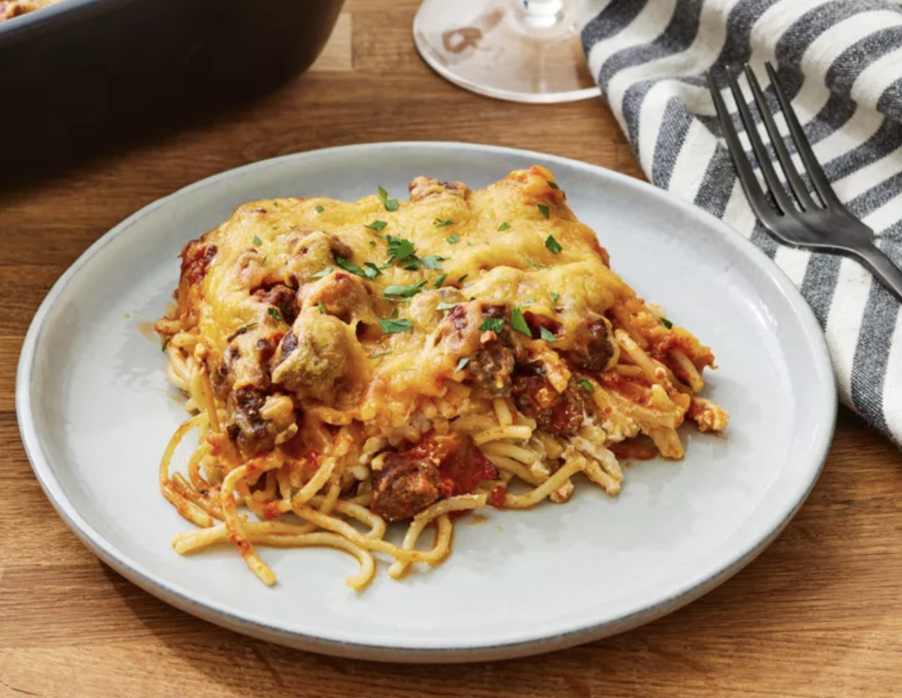

Spaghetti

Description
Easy beef spaghetti recipe made with cottage cheese, cream cheese,
and sour cream.
Cook and prep time: 1 hour
Servings: 8
Ingredients
- 1 package spaghetti
- 1 lb lean ground beef
- 16 ounce jar spaghetti sauce
- 1 / 2 cup butter, sliced
- 8 ounces cottage cheese
- 8 ounces cream cheese, softened
- 1 / 4 cup sour cream
- 8 ounces sharp cheddar cheese
Steps
-
Preheat oven to 350 degrees Farenheit or 175 degrees Celsius.
-
Bring large pot of lightly salted water to a boil. Cook spaghetti in boiling water
until cooked through but firm to the bite, about 8 to 12 minutes. Drain.
-
While pasta is cooking, heat a large skillet over medium-high heat. Cook and stir
beef in the hot skillet until browned and crumbly, 5 to 7 minutres. Drain and discard grease.
-
Transfer beef to a bowl and mix in spaghetti sauce.
-
Place half of the butter slices into the bottom of a 9x13 inch casserole dish. Spread half
of the spaghetti into the dish.
-
Mix cottage cheese, cream cheese, and sour cream together in a bowl. Spread mixture over spaghetti.
-
Cover with remaining spaghetti and top with remaining slices of butter.
-
Pour ground beef mixture over spaghetti and spread in even layer.
-
Bake in preheated oven for 30 minutes. Spread cheddar cheese on top and continue baking until
cheese has melted and is lightly browned, about 15 minutes more. Then Serve.
Home